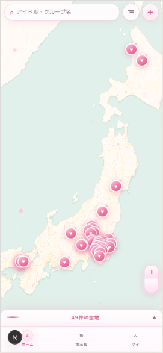
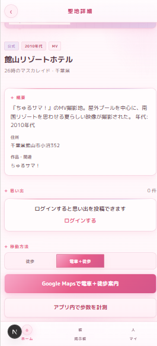
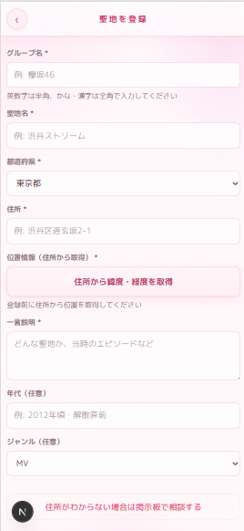
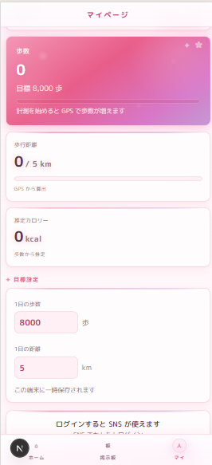

01 / INTRODUCTION

実機画面：聖地マップ（公式65件）
02 / PROBLEM & TARGET
「推しに会いに行く」「お気に入りの場所を歩く」というオタク心理からアプローチする、画期的な行動変容。 Idolelic は“歩く理由”を聖地巡礼に置き、継続しやすい健康習慣をつくる。
03 / CORE TECHNOLOGY
04 / APPLICATION FEATURES

聖地詳細・案内

聖地登録・ジオコーディング
05 / PROGRESS & TECH

実機画面：マイページ（歩数・距離）
06 / PERFORMANCE & ROADMAP
コア歩数計＆マップ機能の基本実装完了
HTTPS環境で実機導通・GPS/歩数ログ確認
聖地65件・MV・ナビ・Auth・管理まで完了
Vercelデプロイと通し確認で一般公開
利用・口コミでトラクション、掲示板DB等を拡張
← → で進む / F 全画面 / P 印刷